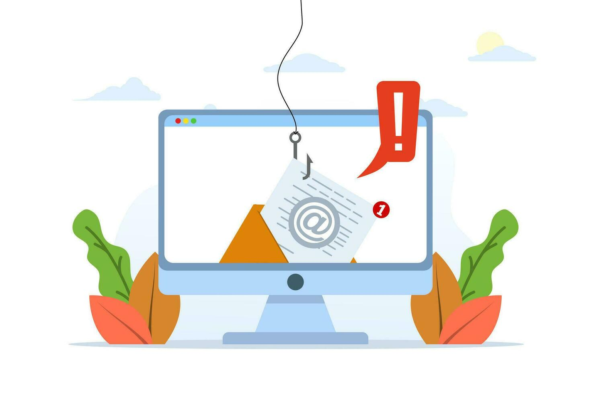

Common Risks and Practical Defenses
Security on the Web covers threats that range from opportunistic phishing to sophisticated software
supply-chain compromises. Threats affect everyone — users, small businesses, and large platforms — and often
exploit human factors as well as technical weaknesses.

Figure: Phishing remains a common method attackers use to gain credentials.
Top user-focused practices
- Use strong, unique passwords and a reputable password manager.
- Enable multi-factor authentication (MFA) for important accounts.
- Keep software and browsers updated to receive security patches.
- Be cautious with email links and attachments; verify sender identity.
Developer & operator practices
Developers and site operators should practice least privilege, secure coding, dependency scanning, and use
HTTPS with modern TLS configurations. Content security policies (CSP) and Subresource Integrity (SRI) can
reduce the risk posed by third-party scripts. Regular backups and incident response plans reduce downtime
when breaches occur.